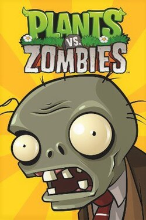
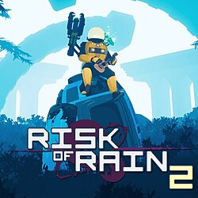

Mis juegos favoritos

Plantas contra Zombies (PvZ) es mi videojuego favorito y uno de los primeros videojuegos que jugué en mi vida. Yo considero que PvZ es uno de los mejores tower defense hechos, aunque desafortunadamente no han lanzado un nuevo juego de PvZ en un buen rato y los que han lanzado como PvZ3 siguen en beta y constantemente están reahaciendo el juego desde 0.
Afortunadamente, los juegos de PvZ tienen una comunidad muy dedicada y activa que se encarga de modificar los juegos para poder crear más contenido.

Risk of Rain 2 es un videojuego que comencé a jugar hace 4 años y rápidamente se ha convertido en uno de mis roguelikes favoritos, ya que desde que lo empecé a jugar me engancho con su gameplay y su música. Aunque el juego ha tenido malos momentos, tal y como la salida del segundo DLC, ya que rompió el juego y los desarrolladores tardaron 1 año en resolver todos los problemas, yo considero que el juego sigue mejorando cada año y, como consecuencia de esto, aunque lo deje de jugar por un rato, siempre regreso a él.